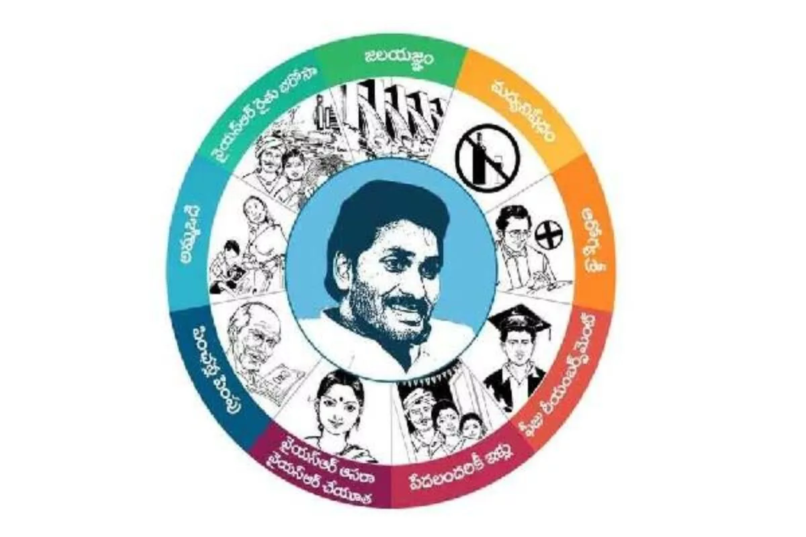

This chart shows the projected population for the years 2011, 2021, 2022, and 2023.
Andhra Pradesh
Political parties in Andhra Pradesh

Bharatiya Janata Party

Congress

Yuvajana Shramika Rythu Congress Party

Telugu Desam Party

Jana Sena Party
Communist Party of India